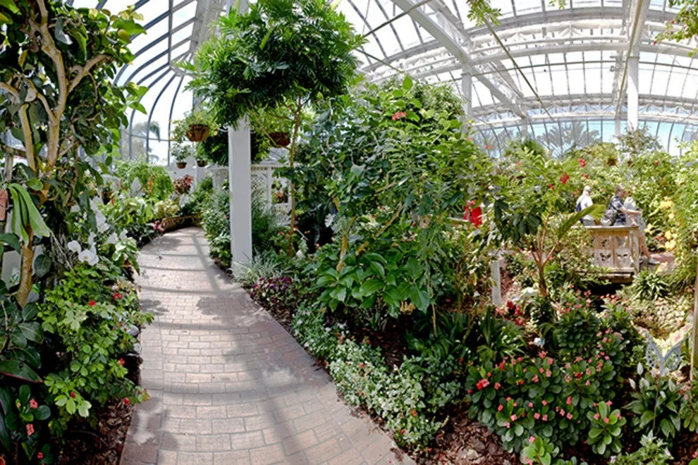

| Submitted by user iosborn22. Blue morpho butterflys |
wings are bright blue, edged with black. Blue morpho is |
among the largest butterflies in the world, with wings |
spanning from five to eight inches. When blue morpho |
flies, the contrasting bright blue and dull brown colors |
flash, making it look like the morpho is appearing and |
disappearing |
OLD WORLD SWALLOWTAIL |
 |
Submitted by user smoothj282. Papilio machaon, the |
old world swallowtail, is a species of swallowtail that |
naturally occurs in Europe, Africa, Asia and even North |
America. It prefers to lay eggs on Apiaceae plants. It is a |
medium sized swallowtail that is relatively easy to rear |
and breed in captivity. |
|
| OUR MISSION STATEMENT |
Butterfly World is in a unique Lepidoptera source in our state, featuring an |
8,0000-square foot indoor conservatory home to some 4,000 exotic and |
domestic butterflies in a tropical environment. Butterfly World focuses on |
butterfly-related education, recreation, entertainment and gardening |
needs. |
LATEST NEWS |
By Cheri Plum, |
posted April 31, 2022 |
BUTTERFLY WORLD OPENS ITS DOORS |
 |
Latest Conservatory addition. |
NEED MORE DATA? |
contact us with your |
questions, ideas and |
suggestions. Link |
Latest Conservatory addition. |
|
Copyright ButterFlyWorld 2038 |